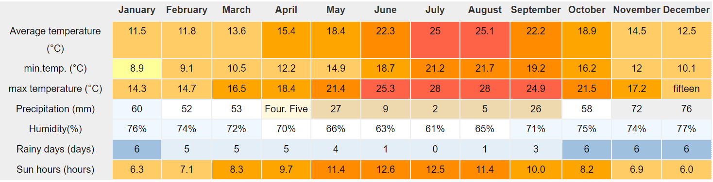
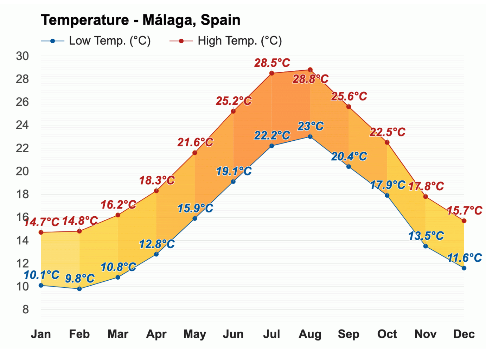

Digital Nomads Malaga

Temperature of the whole year
Nice weather in Málaga allows to enjoy the outdoors in every season. The climate is subtropical-Mediterranean with very mild winters and hot summers. Málaga enjoys plenty of sunshine throughout the year, with an average of about 300 days of sunshine and only about 50 with precipitation annually. Its location in the Costa del Sol makes Málaga a perfect place, being among the cities in Spain with more sunshine hours. The average annual temperature in Málaga province is 23 °C during the day, one of the warmest in Europe, and 13°C at night. In the coldest month, January, the temperature ranges from 12 to 20 °C during the day. Málaga experiences one of the warmest winters in Europe. The average temperature during the day in the period December through February is 17–18 °C. Because of its proximity to the Mediterranean sea, during the summer temperatures are milder."
Check this temperature table of the entire year in malaga
 Temperature of the whole year
Nice weather in Málaga allows to enjoy the outdoors in every season. The climate is subtropical-Mediterranean with very mild winters and hot summers. Málaga enjoys plenty of sunshine throughout the year, with an average of about 300 days of sunshine and only about 50 with precipitation annually. Its location in the Costa del Sol makes Málaga a perfect place, being among the cities in Spain with more sunshine hours. The average annual temperature in Málaga province is 23 °C during the day, one of the warmest in Europe, and 13°C at night. In the coldest month, January, the temperature ranges from 12 to 20 °C during the day. Málaga experiences one of the warmest winters in Europe. The average temperature during the day in the period December through February is 17–18 °C. Because of its proximity to the Mediterranean sea, during the summer temperatures are milder.